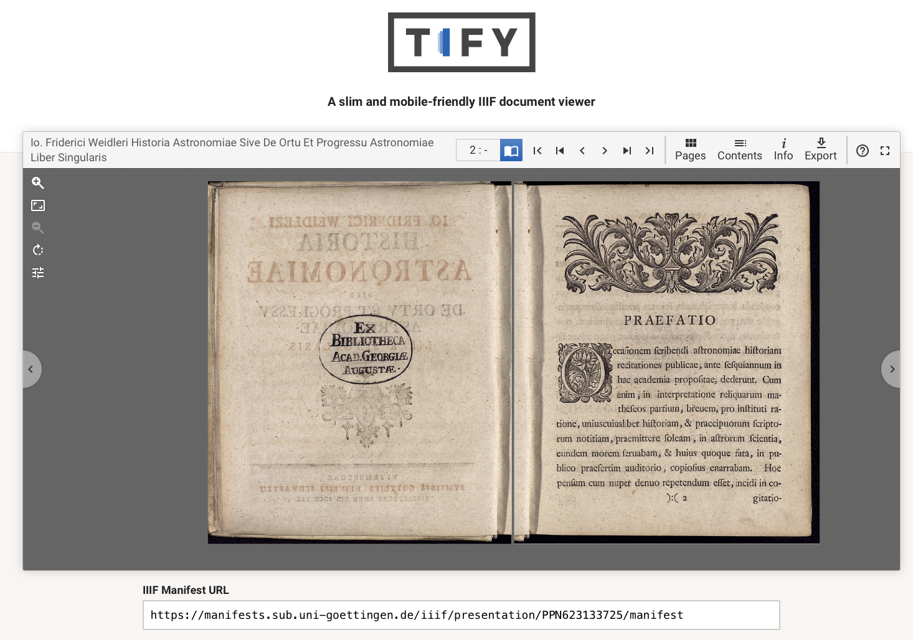
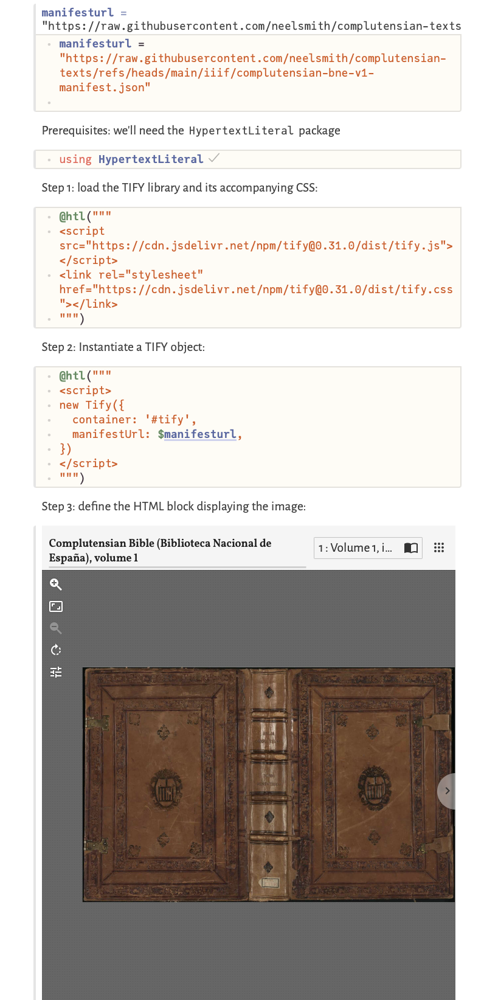
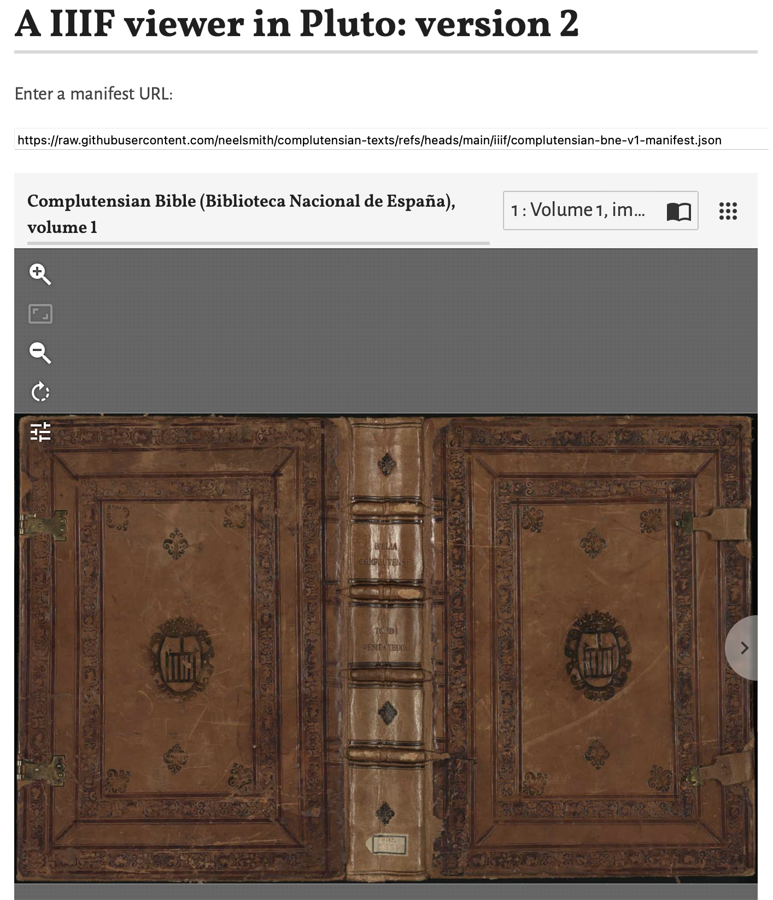

Pluto notebooks run in a web browser, and are reactive: if you change one cell, every cell depending on it automatically updates. You write Pluto notebooks in Julia: in contrast to, say Jupyter, every cell in a Pluto notebook is simply a Julia expression.
But it’s also easy to interact with the HTML, CSS and javascript in a notebook’s web page using the Julia HypertextLiteral package. (For full details see this guide.) This post will show you how to add an interactive display of the images in a IIIF manifest to your Pluto notebook in just three steps.
Version 1: a IIIF browser in three steps
There are many apps for browsing the images in a IIIF manifest. Within our Pluto notebook we’ll use TIFY, a lightweight package written entirely in Javascript. The TIFY home page puts an embedded IIIF front and center and lets you paste in the URL of any IIIF manifest you’d like to browse. We’ll replicate this within a Pluto notebook in just a few cells.

Prerequisites
Start with a new Pluto notebook. As explained in the guide to using Javascript in Pluto, we’ll need the HypertextLiteral library, so add a cell for that:
using HypertextLiteralIn version 1 of our notebook, we’ll hard-code the URL for the IIIF manifest; we’ll improve on that in version 2, but for now just define a variable named manifesturl. You can the URL for any IIIF manifest you like. I’ll start with a one from my current project on the Complutensian polyglot Bible:
manifesturl = "https://raw.githubusercontent.com/neelsmith/complutensian-texts/refs/heads/main/iiif/complutensian-bne-v1-manifest.json"Now we can replicate the TIFY home page with just three cells in our notebook.
Cell 1: load the TIFY library
The HypertextLiteral package proves a macro @htl to insert an HTML script element into your notebook’s web page. We can use this to load TIFY’s javascript library and associated CSS in a single cell:
@htl("""
<script src="https://cdn.jsdelivr.net/npm/tify@0.31.0/dist/tify.js"></script>
<link rel="stylesheet" href="https://cdn.jsdelivr.net/npm/tify@0.31.0/dist/tify.css"></link>
""")Cell 2: instantiate a Tify object
Next we’ll again use the @htl macro, this time to create a Tify object (from the library we just loaded). We need to define two values for the Tify object: the name of an HTML container where it should show the display, and a URL for the IIIF manifest to display.
We’ve already defined a URL for a manifest in the variable manifesturl: with HypertextLiteral, we can directly interpolate that value into our argument to the @htl macro. For the HTML container, I’ve chosen the ID tify. The resulting cell looks like this:
@htl("""
<script>
new Tify({
container: '#tify',
manifestUrl: $manifesturl,
})
</script>
""")Cell 3: display the manifest
Finally, we need to define the HTML container element tify, so we’ll use the @htl macro one last time. Here I’ve included an optional CSS value to set the height of the element for the display.
@htl"""
<div id='tify' style='height: 800px'></div>
"""Now, to display your images, you only need to add a value for the manifest URL: run the cell where you defined the manifesturl variable, and the first page of your manifest should appear!
Result
Your completed notebook should look something like this screen shot:

The notebook ia saved as a webpage where you can read it or copy and paste contents here. Use the button labelled “Edit or run this notebook” to download the Pluto notebook and run it for yourself.
Version 2: let the user select a manifest
Pluto is intended for interactive computing. We can easily improve version 1 of our notebook and let the user supply a manifest’s URL, like the TIFY home page, rather than forcing the user to change a hard-coded value assigned to manifesturl.
For that, we’ll want the PlutoUI package, so begin by adding that:
using PlutoUIPlutoUI gives you several prebuilt widgets for Pluto notebooks that allow users to provide different kinds of input. (See the PlutoUI documentation.) We’ll use a simple TextField, and allow a user to paste in a text value for our manifest. We use PlutoUI’s @bind macro to bind the value of an interactive widget to a Julia variable. Our Tify object already expects a value from a variable named manifesturl, so we’ll replace the existing cell defining manifesturl with this one:
@bind manifesturl TextField(800, default="https://raw.githubusercontent.com/neelsmith/complutensian-texts/refs/heads/main/iiif/complutensian-bne-v1-manifest.json")The first time you add this cell, make sure you run it once so that the TIFY library catches your change in the definition of manifesturl. Any time you change the URL in the text field after this, your display cell will update automatically.
Result
The order of cells in a Pluto notebook’s display does not affect how they run. We’ll tidy up our notebook by putting the user input and display at the top of the page, and tuck the underlying work with TIFY out of the way. Here’s a screen shot of the result replicating the funcionality of the TIFY home page:

Version 2 of the notebook ia saved as a webpage where you can read it or copy and paste contents here. Use the button labelled “Edit or run this notebook” to download the Pluto notebook and run it for yourself.
Citation
@online{smith2024,
author = {Smith, Neel},
title = {Add a {IIIF} Browser to Your {Pluto} Notebooks},
date = {2024-11-15},
url = {https://neelsmith.quarto.pub/posts/2024-11-15-pluto-iiif/},
langid = {en}
}